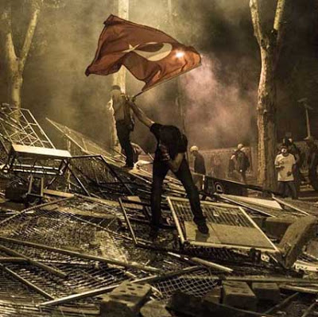

#gazeteler
Tokyo 2020 yaz olimpiyatlarında değişimsel değil, güvenli bir seçenek olduğu için seçildi [..] Uluslararası Olimpiyat Komitesi için Japonya'nın [Fukushima sonrası] yaşadığı çevresel sorunlar, Türkiye'nin Suriye sınırındaki savaş, İstanbul'daki protestolara hükümetin verdiği aşırı sert tepki, İspanya'daki ekonomik kriz ve yüksek işsizlikten daha önemsiz gözükmüş olmalı.
